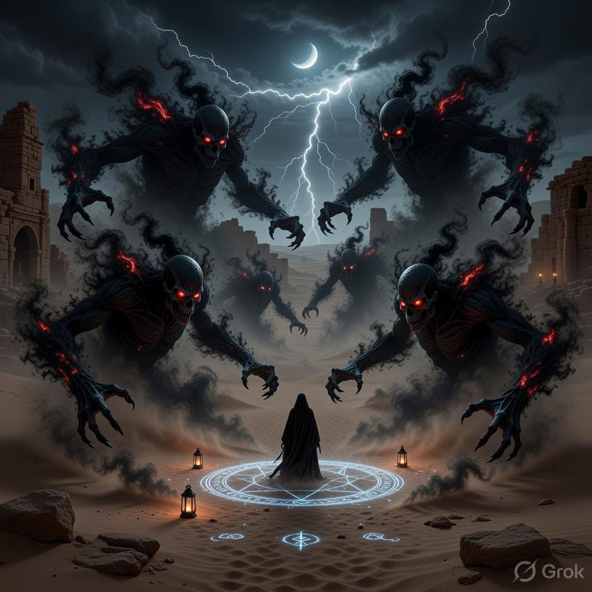
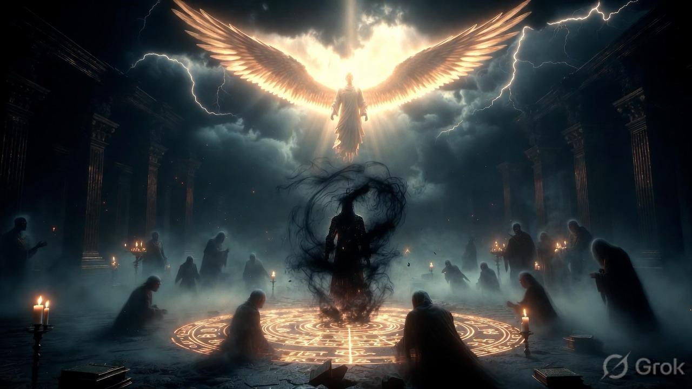
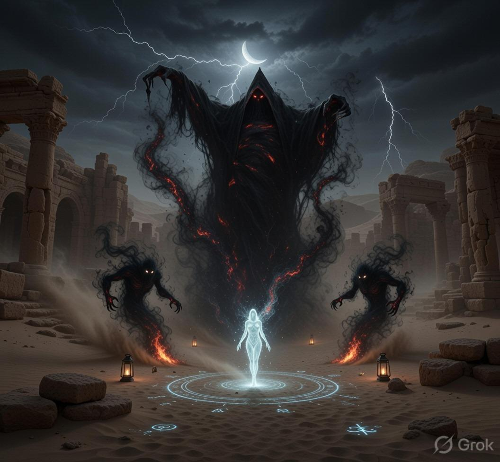
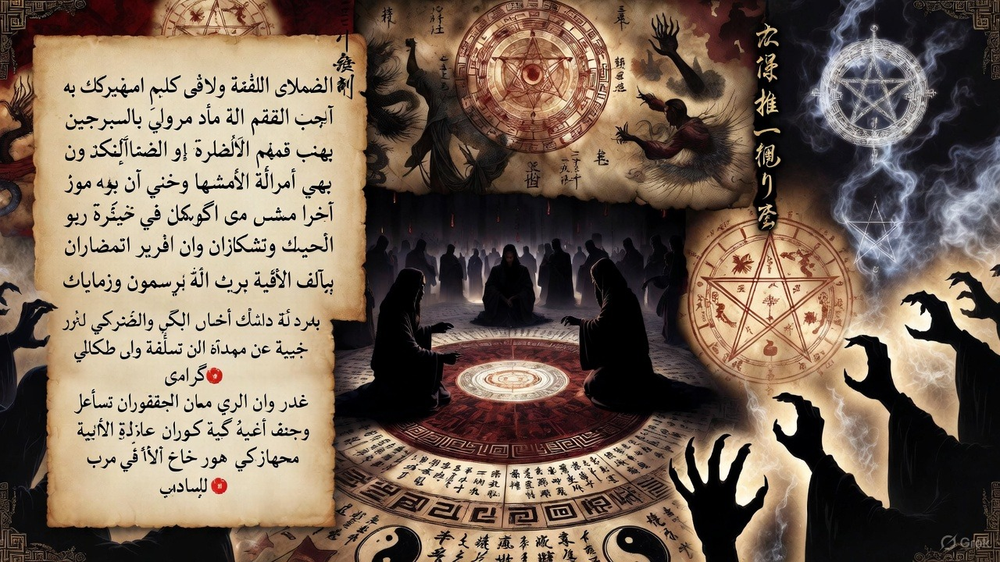
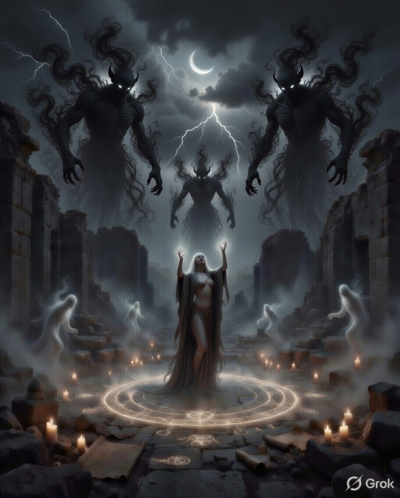

The Sacred
Healing.
Confidential spiritual guidance rooted in ancient faith. We help you navigate life's darkest shadows to find your inner light.






Compassionate
Spiritual Guidance
We operate at the intersection of faith and emotional well-being. Our service is designed for those seeking a structured, prayerful approach to overcoming life's most complex transitions.
"Providing a sanctuary for the confused and a voice of hope for the weary."
Bible Based
Scriptural Insights
Qur'an Based
Divine Revelation
The Ritual Flow
Guided Spiritual Intervention
Request
Your concern is received and placed into the flow of energy with sacred intent.
Reflection
Patience and faith allow the spiritual path and hidden truths to reveal themselves.
Guidance
Meaningful, grounded resolution tailored specifically to restore your spirit.
Consultation Options
Select the level of support that best fits your spiritual journey. All sessions are conducted with complete confidentiality.
Initial Guidance
A focused session via WhatsApp or Email to address your immediate concerns and provide clarity.
- ✓ Personal Care
- ✓ 24-48h Response
Deep Consultation
+ In-depth Session
Choose this if you require deeper spiritual mapping, prayer support, and extended time for explanation.
- ✓ Extended Time
- ✓ Deep Prayer Support
Spiritual Remedies
Specific faith-based actions, customized prayers, or spiritual steps tailored to your situation.
- ✓ Faith-based Steps
- ✓ Customized Approach
"Your spiritual well-being is our highest commitment."
Heartfelt Experiences
What Seekers Say
“I was going through deep emotional pain. After the session, I felt clarity and peace. Within weeks, my situation improved.”
“Facing career blockage and stress was hard. The advice was very accurate. I am now in a much better position.”
“The guidance was honest and spiritually powerful. I followed the steps and slowly things started changing.”
“The guidance was honest and spiritually powerful. I followed the steps and slowly things started changing.”
“The guidance was honest and spiritually powerful. I followed the steps and slowly things started changing.”
Areas of Support
Direct Spiritual Intervention
Relationship Struggles
Dissolve toxic interference. We restore the natural spiritual connection between souls, removing the shadows of misunderstanding.
Career & Abundance
Break through financial blockages. Realign your frequency with the core energy of success and reclaim your growth.
Anxiety & Peace
Silence negative energy. Build a spiritual shield around your mind to ensure permanent tranquility and focus.
Anxiety & Peace
Silence negative energy. Build a spiritual shield around your mind to ensure permanent tranquility and focus.
Get in Touch
Contact Us
If you feel ready to share your concerns, we are here to listen with care, confidentiality, and faith. Reach out without fear or hesitation.
Email Directly
yourname@email.com
+91 XXXXX XXXXX
Available Hours
Mon – Sat | 10:00 AM – 6:30 PM
Response Time
Replies within 24–48 hours